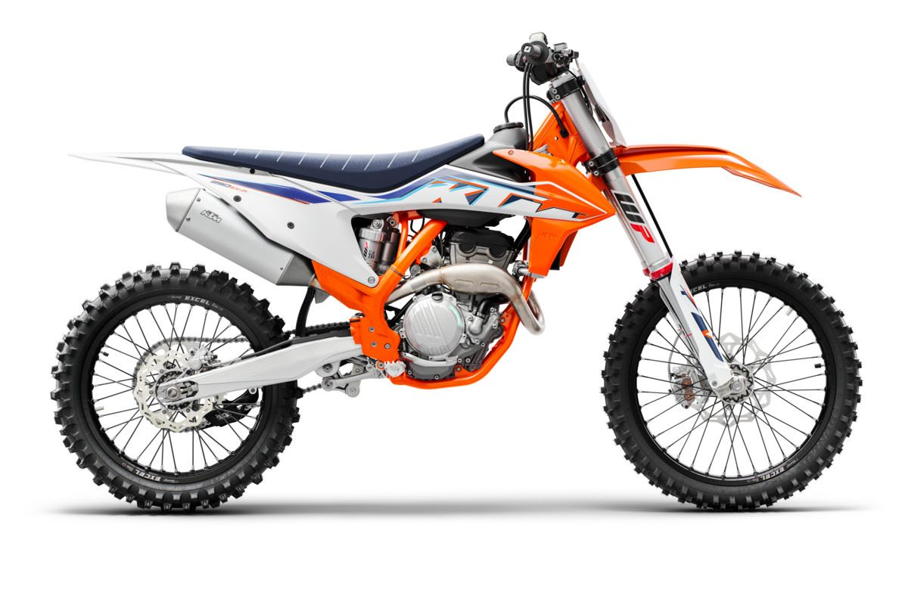

With over a decade of racing - and winning - at the highest tier of professional motocross, the KTM 350 SX-F has long shed its underdog label and proven itself a worthy adversary. Delivering usable power throughout the rev range, unwavering stability at speed, and true championship-winning credentials, the KTM 350 SX-F is once again ready to race.
